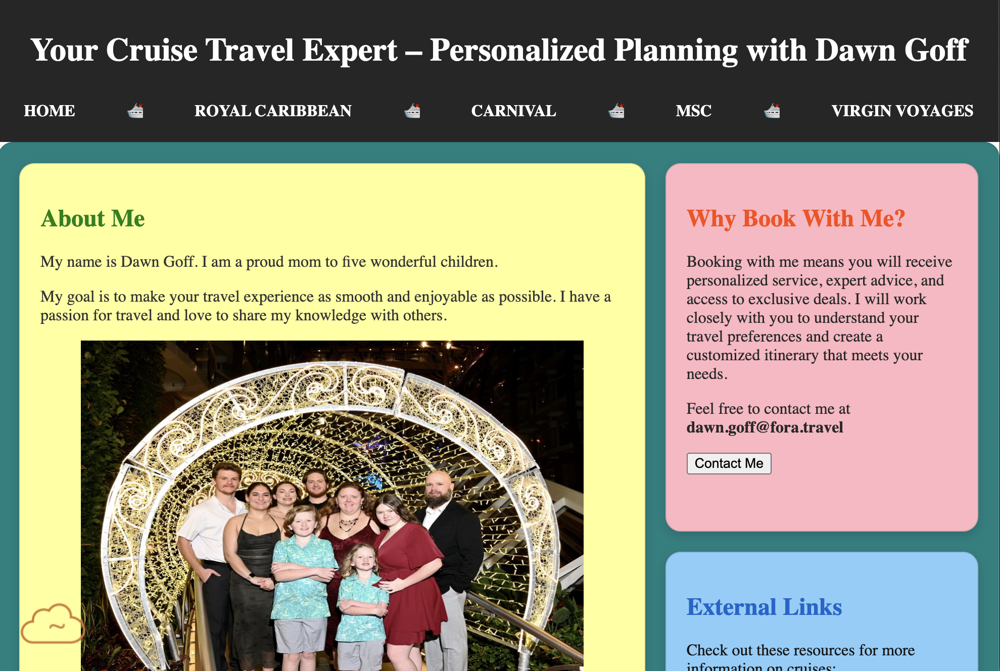

Peer Review 1
Goff, Nick

Website Checklist
- Navigation
- Submission link leads directly to the correct page
- Includes primary page with links (if instructed)
- All file/folder names are lowercase with no spaces
- Design
- Page has sufficient contrast and readable fonts
- Uses standard .css file unless otherwise specified
- C - page has sufficient contrast and elements are legible; R - repetition of design elements is consistent and reasonable; A - alignment is logical and doesn't unnecessarily break typical rules; P - related items are grouped together
- Structure
- Includes <header>, <main>
- Does not include <footer>
- Optional <nav> between header and main for menu
- Details and Content
- Header includes site/brand name in an <h1>
- <main> starts with page name in an <h2>
Notes
- The bright colors you used fit the mood of the website; gives of the feeling of fun and excitement
- The website is rather easy to navigate
- Each link in the nav bar should take the user to a different page
- Rather than use sections, create an html file for each page
- Don't nest your heading tags so deeply within your divs
- Consider coming up with a brand slogan